Fondée en 600 avant JC par des marins grecs de Phocée, c'est la plus ancienne grande ville française et sûrement la plus complexe. 2ème ville et 1er port de France, elle était au temps des colonies la porte de la France sur la Méditerranée. Marseille demeure aujourd'hui une capitale du Sud Européen généreuse et cosmopolite avec son accent, son vieux port pittoresque, sa bouillabaisse et son folklore populaire. Ville de contraste avec ses vieux quartiers (Le Panier près du vieux port), sa corniche lumineuse face à la mer, ses calanques sauvages qui plongent dans les eaux d'un bleu profond sur 20 km de côtes jusqu'à Cassis, Marseille rayonne sur la Provence par le rôle économique qu'elle y joue. Le port, l'aéroport, les industries pétrolières et la forte démographie, mais aussi les technopoles lui assurent cet ascendant renforcé par une forte vitalité scientifique, artistique et culturelle. Marseille est classée ville d'art et d'histoire.
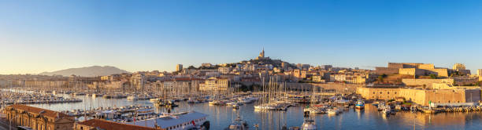Les premières occupations humaines du bassin de Marseille remontent à la période du Paléolithique moyen (- 60 000 ans). Quelques sites du Paléolithique supérieur, entre - 27 000 et - 10 000 ans, dont la grotte Cosquer, l’un des plus vieux témoins d’art pariétal européen, sont également connus. En revanche à partir du Mésolithique (du 9ème au 6ème millénaire avant notre ère), de nombreuses occupations humaines sont attestées. Au 6ème millénaire avant notre ère, des pasteurs et paysans néolithiques issus d’une migration dont l’origine se situe en Méditerranée orientale, accostent dans le bassin. Ils introduisent en Provence le blé et l’orge, le mouton et la chèvre, la pierre polie et la céramique. Leur mode de vie, fondé sur la sédentarité, est radicalement différent de celui des derniers chasseurs – cueilleurs nomades qui les ont précédés. Du 6ème au 3ème millénaire avant J-C, ces populations vont marquer le paysage par leurs pratiques agricoles, avant de céder la place à celles de l’Age de Bronze qui choisissent d’installer leur village dans la plaine ou sur des sites de hauteur fortifiés. Durant le premier âge de Fer, plusieurs de ces sites (oppida) sont signalés dans le bassin parmi lesquels la Tourette, à Saint-Marcel, avec une occupation humaine contemporaine de la fondation de Marseille (- 600 Av. J.-C.).
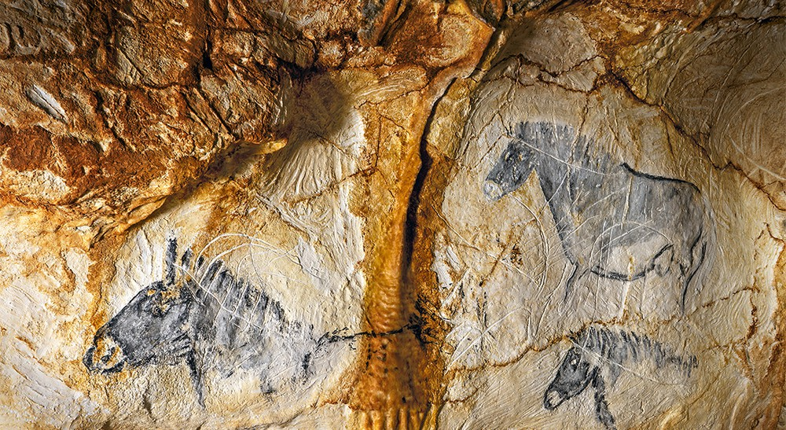Vers – 600 avant J-C, des Grecs d’Asie Mineure, actuellement Turquie, quittent Phocée pour fonder une cité dans la calanque du Lacydon. Au début du VIème siècle avant notre ère, un premier habitat s’organise dans l’actuel quartier du Panier au-dessus du port situé dans la calanque. La ville est placée sous la protection d’Artémis, d’Apollon et d’Athéna qui ont leur temple sur les collines. Les Phocéens utilisent la position favorable du site de Marseille, à l’abri des vents dominants, la protection des îles du Frioul et la proximité avec le Rhône pour commercer avec les Gaulois. Le mythe de fondation de Massalia décrit la rencontre entre un marin grec Prôtis et une princesse gauloise, Gyptis. Son père, Nannos, le roi des Ségobriges, donne en cadeau de mariage le territoire de Massalia qui deviendra la première ville de France. Il est possible que les citoyens de Phocée aient émigré une seconde fois en 546 avant J-C, chassés par les Perses. Ils apportent avec eux leur religion, leur langue, des techniques de construction, la culture de la vigne et de l’olivier et des produits commerciaux de Méditerranée comme le vin et les vases en céramique. De la rencontre entre Grecs et Gaulois va naître une riche culture, en dépit des nombreux conflits territoriaux.
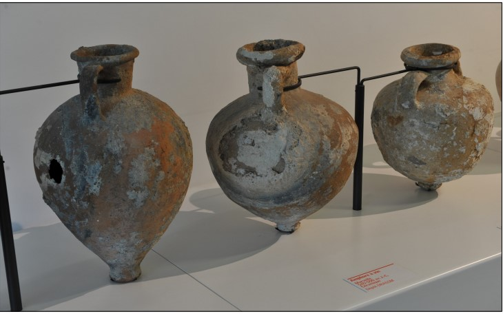Massalia est une cité grecque indépendante, de sa fondation vers 600 avant J-C, à la prise de la ville par César en – 49 avant notre ère. Elle joue un rôle de première importance dans la redistribution des produits méditerranéens et continentaux le long de la côte de la Gaule et de l’Ibérie, en s’appuyant sur une série de comptoirs, d’Agde à Nice. Ses marins, comme le célèbre Pythéas, s’enhardissent au-delà des colonnes d’Hercule (le détroit de Gibraltar) pour voyager dans l’Atlantique nord ; à la recherche de gisements d’étain ou vers le Sud, le long des rivages africain pour le navigateur Euthymènes. Rivale de Carthage et alliée de Rome de longue date, elle joue un rôle peut être dans la première guerre punique (- 260 à - 241 avant J.-C.), assurément au début de la deuxième guerre punique, au moment de la bataille de Sagonte, en 219 avant notre ère. Vers 125 avant J-C, la pression des tribus gauloises contraint les Massaliotes à faire appel à Rome, ce qui amènera la fondation de Narbonne (en 118 avant J.-C.) et la création de la province de Gaule transalpine, la Narbonnaise. Dotée alors d’un territoire considérable, elle est au sommet de sa prospérité.
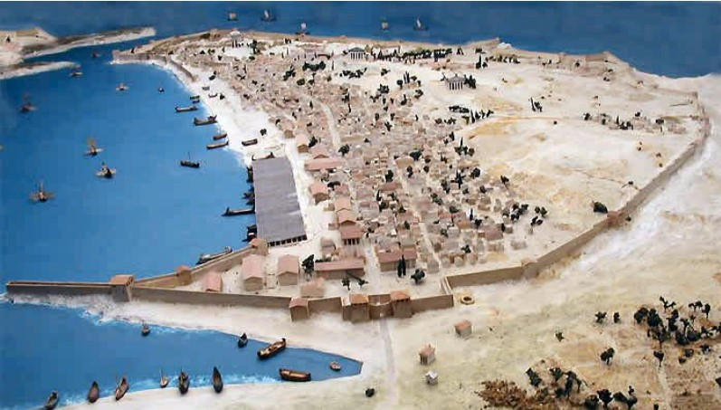Placé à l’est de la ville antique, ce site présente les résultats de la première grande fouille archéologique urbaine. Les vestiges, classés Monument historique, témoignent des débuts de la plus ancienne ville de France, fondée vers 600 av. J.- C. Aux portes de la ville antique, au VIe siècle av. J.-C., le site est occupé par des exploitations agricoles et des carrières d’argile, en bordure de marais. À l’époque hellénistique et romaine, c’est un quartier hors les murs, qui selon les périodes, remplit plusieurs fonctions. C’est un site portuaire et commercial avec un quai et des entrepôts d’époque romaine. C’est également un espace occupé par des terrasses funéraires grecques au IVe siècle av. J.-C. et une nécropole (du Vème au VIIème siècle de notre ère). C’est aussi, dans l’Antiquité tardive, un faubourg artisanal, comme en témoignent des ateliers de métallurgie, de verrerie, de travail du cuir et de l’os. C’est enfin un secteur défensif avec des remparts, portes et tours, avant-mur et fossés, de la fin du VIe siècle av. J.-C. jusqu’au XIIe siècle de notre ère. Le quartier médiéval et moderne est en partie fondé sur les murs des remparts antiques et conserve, au travers de la Grand-Rue, le tracé de l’axe de la voie grecque puis romaine qui traverse Massalia.
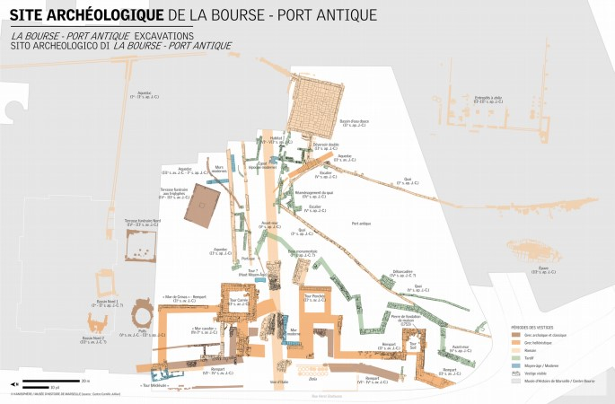Massalia est conquise par Trébonius, légat de Jules César en 49 av. J.-C. La ville perd alors son indépendance politique mais reste un port actif et conserve très longtemps son caractère de ville grecque. L’habitat se développe dans l’ancienne zone portuaire. On y trouve un forum dallé, un théâtre de tradition grecque et, plus à l’est, un vaste édifice thermal. En bordure du plan d’eau du Lacydon, apparaissent de vastes entrepôts, des horrea. En dépit d’une romanisation progressive qui se manifeste par la progression du latin, l’architecture et le décor des maisons et les usages funéraires, l’héritage grec se perpétue dans la trame urbaine, ses orientations et ses « quartiers ». Il se manifeste également par l’usage fréquent de la langue grecque sur les inscriptions. Sur l’ancien territoire agricole, de grandes habitations littorales ou rurales (villae) montrent une campagne romanisée où l’on cultive la vigne, l’olivier et les céréales. Marseille, comme Arles, participe à la paix romaine en Méditerranée, l’essor des échanges en est une conséquence particulièrement bien documentée avec les épaves et leurs cargaisons.
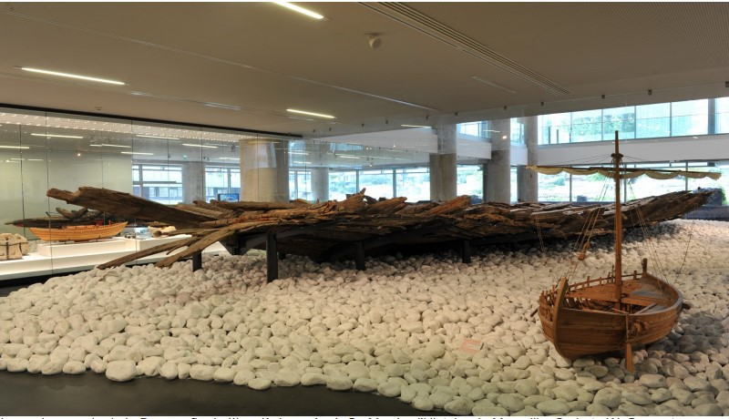Marseille est au Ve siècle une « ville de saints », en vertu de la nouvelle donne religieuse décidée par l’empereur Constantin. En 314, Marseille envoie l’évêque Orésius au concile d’Arles, une communauté chrétienne est donc certaine, sans doute dès le IIIème siècle. Dès 400, de nouveaux édifices de culte caractérisent ces premiers temps chrétiens. En témoignent en ville un groupe épiscopal doté du plus grand baptistère des Gaules, la Major et, hors les murs, le sanctuaire de Saint-Victor et la basilique funéraire de la rue Malaval avec sa tombe vénérée. Des nécropoles aux rites et pratiques nouvelles perpétuent l’auréole funéraire antique autour de la ville et le long des voies avec des regroupements autour des nouveaux édifices funéraires. Près de la cathédrale on constate par ailleurs les premiers ensevelissements en ville. Le développement de l’habitat et de l’activité du port montre des échanges intenses que Marseille entretient avec toute la Méditerranée, après la fin de l’Empire et l’avènement des Francs. Marseille se retrouve éloignée du centre du pouvoir et revendique des velléités d’autonomie. Cependant la reprise en main de la ville par Charles Martel en 738 inaugure deux siècles d’un haut Moyen Âge au cours desquels Marseille décline. Elle marque aussi la fin de l’Antiquité pour Marseille et la Provence. À terme, l’essentiel de l’habitat paraît cantonné dans deux enceintes réduites d’une ville dont les monuments antiques sont en ruine.
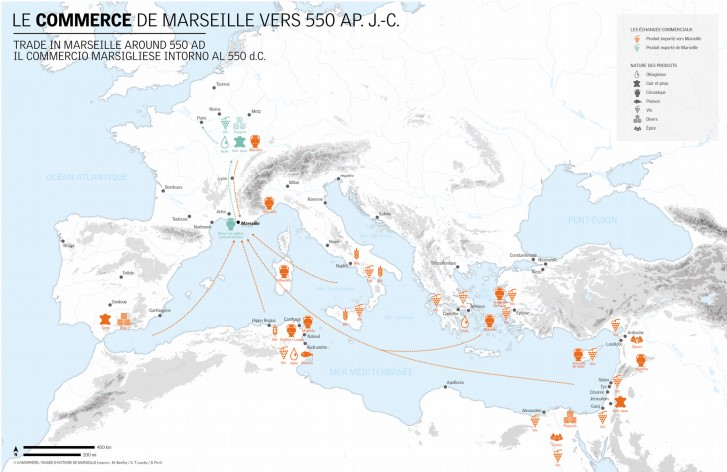Au Xème siècle, la Provence est rattachée aux souverains de Bourgogne qui installent en 948 des vicomtes à Marseille. Ce régime perdure avec la maison des comtes de Barcelone, jusqu’à la mort de Raimond - Bérenger V en 1245. Sa fille Béatrix lui succède et épouse en 1246 le frère de Louis IX, Charles d’Anjou, qui n’a de cesse de soumettre la ville. Cette première période s’achève en 1382 avec l’assassinat de la reine Jeanne. Après une époque de troubles, Louis d’Anjou, frère de Charles V, inaugure la deuxième maison d’Anjou. Celle-ci se clôt en 1481 avec la mort sans héritier du neveu et successeur du roi René, Charles du Maine, qui a légué la Provence à son cousin Louis XI. Palamède de Forbin, fils d’une riche famille, est nommé gouverneur. Il se rend vite impopulaire et il est destitué à la mort de Louis XI. Le rattachement définitif à la France du « comté de Provence et des terres adjacentes dont Marseille » est confirmé par Charles VIII en 1487. Plusieurs causes expliquent le peu de vestiges du Moyen-Âge : les destructions dues au sac des Aragonais de 1423 et celles de la période révolutionnaire, les constructions postérieures qui arasent les niveaux médiévaux pour s’appuyer sur l’antique et le désintérêt des édiles dont témoigne, à la fin du XIXème siècle, la destruction de l’église Saint-Martin.
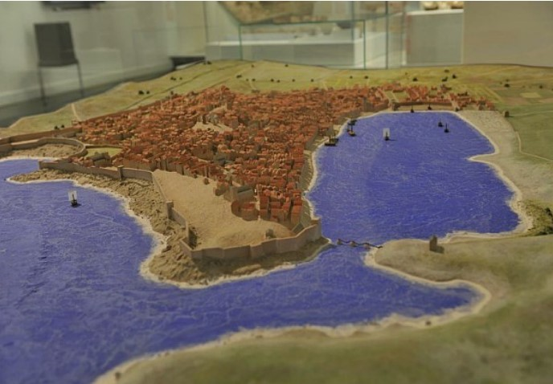En 1481, à la mort de Charles V d’Anjou, la Provence est unie à la couronne de France. Marseille conserve un statut fiscal privilégié de « terre adjacente » à la Provence. Pour les rois de France, le port de Marseille est un atout dont ils vont tirer parti pour leurs expéditions en Italie. La ville en bénéficie mais subit aussi en 1524 un siège. François Ier y vient trois fois, notamment à l’occasion du mariage de son fils Henri avec Catherine de Médicis. Pendant les guerres de Religion, la ville jouit d’une certaine prospérité grâce à ses relations avec la Barbarie (Afrique du Nord) et le Levant (la Méditerranée orientale, sous domination turque). Le protestantisme y a rencontré peu d’échos et elle reste un temps à l’écart des conflits. Lorsqu’en 1589, après l’assassinat d’Henri III, l’héritier du trône devient Henri de Navarre, prince protestant, elle choisit le camp de la Ligue catholique. Le ligueur catholique Charles de Casaulx la transforme en 1591, avec le soutien des Espagnols, en une petite république marchande, indépendante du royaume jusqu’à son assassinat en 1596.
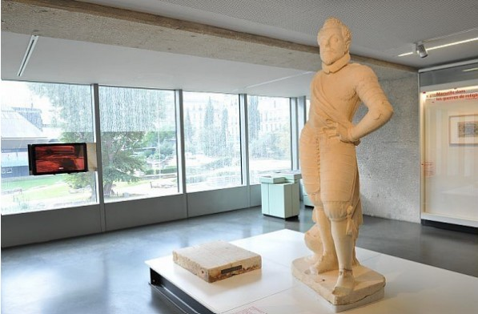Louis XIII et Louis XIV avec leurs ministres respectifs, Richelieu et Colbert, nourrissent de grandes ambitions maritimes et commerciales pour la ville. Au milieu du XVIIème siècle, Marseille se tient à l’écart des troubles de la Fronde. Mais le premier consul, Gaspard de Glandevès-Niozelles, s’engage maladroitement dans un rapport de force avec le jeune roi Louis XIV qui décide de mettre la ville au pas. Sa venue à Marseille en 1660 marque un tournant. Ce coup de force s’accompagne de décisions économiques et de grands aménagements portuaires et urbains. Louis XIV ôte le pouvoir municipal aux nobles pour le confier aux négociants et aux bourgeois. En 1665, il décide de construire un grand Arsenal des Galères et les forts Saint-Nicolas et Saint-Jean. En 1669, il accorde à Marseille le statut de port franc. L’agrandissement de 1666 triple la surface de la ville. La « ville nouvelle », aux artères rectilignes, enserre le port. Depuis 1668, un système de quarantaine sanitaire protège Marseille des contagions. Une grave imprudence sera cependant à l’origine, en 1720, de la dernière peste qui frappe la ville.
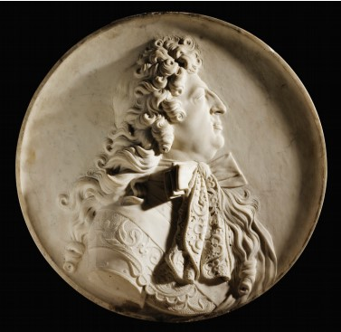L’essor commercial de Marseille, interrompu par la peste de 1720, reprend rapidement, notamment grâce à l’arrivée massive d’une population provençale ou étrangère à la région. À partir de 1748, le transfert de la plupart des galères à Toulon permet de consacrer pleinement le port au commerce, bien que l’espace libéré ne soit occupé qu’à la fin du siècle. Le commerce au long cours se développe d’autant plus que l’art de la navigation connaît des avancées significatives qui améliorent les traversées et leur précision. Le siècle des Lumières brille également à Marseille, notamment grâce à l’Académie des Belles-Lettres, Sciences et Arts, fondée en 1726, et qui existe toujours. Comme dans les autres grandes villes, la Révolution française y trouve un écho important.
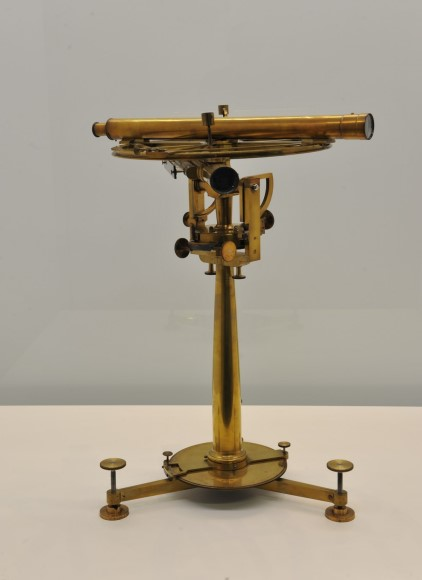Les lendemains de la Révolution sont difficiles pour Marseille : elle subit les conséquences des conflits européens qui affectent le port et l’économie jusqu’en 1820. Mais la prise d’Alger par les troupes françaises relance dès 1830 l’économie de la ville. La population croît considérablement, passant de 130 000 habitants en 1830 à 550 000 en 1905. Une véritable explosion urbaine se produit sous le Second Empire : développement des chemins de fer, création de nouveaux bassins portuaires au nord, grands travaux d’urbanisme, mise en place progressive de faubourgs industriels où affluent les travailleurs des vallées alpines et de l’Italie. Se dessinent progressivement une ville populaire au nord et une autre de tradition bourgeoise au sud, chacune avec ses modes de vie, ses plaisirs, ses habitats. Largement ouverte sur la Méditerranée et au-delà, grâce aux compagnies maritimes équipées désormais de bateaux à vapeur, favorisée par son lien avec l'Empire colonial français, Marseille connaît une expansion bien réelle au tournant du XXème siècle.
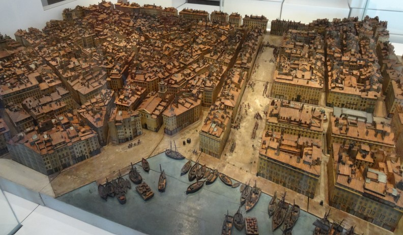Marseille, en ce début du XXème siècle, est marquée par l’inauguration du pont transbordeur, le développement du tramway, l’exposition sur les applications de l’électricité... Les expositions coloniales consacrent avec faste la volonté d’expansion de la France outre-mer alors que la guerre qui éclate en 1914 est l’occasion de voir débarquer les « soldats de l’Empire » dans une ville située loin des affrontements. L’entre-deux-guerres confirme la mauvaise réputation qui frappe Marseille depuis la fin du XIXème siècle. Plusieurs événements malheureux entraînent, une fois de plus, la mise sous tutelle de la cité. Lors de ces années sombres, on peut pourtant relever des lueurs d’espoir : la ville accueille ceux qui fuient les totalitarismes et certains intellectuels lancent des ponts de compréhension et de tolérance, à l’image de la revue Les Cahiers du Sud. Après la défaite de 1940, Marseille reste le seul grand port français en zone libre et devient ainsi un foyer important de la Résistance. Mais celle-ci est durement réprimée, après novembre 1942, par les Allemands, qui multiplient les rafles, déportent massivement les juifs et détruisent en grande partie les quartiers au nord du Vieux-Port. En août 1944, la libération de la ville par l’armée d’Afrique est précédée d’une insurrection populaire.
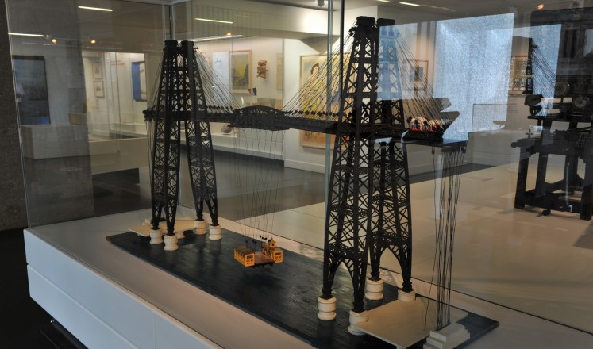Durant la seconde moitié du XXème siècle, Marseille est marquée par des phénomènes mondiaux, avec des répercussions pour cette ville portuaire ouverte sur la Méditerranée. La ville se relève difficilement des destructions de la Seconde Guerre mondiale. Elle connaît l’érosion de son industrie, de son port dont l’activité se détourne pour l’essentiel vers Fos et l’étang de Berre. Par ailleurs, elle subit le choc de la décolonisation d’un point de vue économique et migratoire. En 1962, la ville accueille de très nombreux rapatriés qui fuient le climat de terreur en Algérie ainsi qu’une forte main-d’œuvre maghrébine. Cette population est notamment logée dans de nouveaux bâtiments situés dans les quartiers nord et est. L’urbanisation atteint les collines, elle les franchit pour constituer de fait une vaste agglomération rejoignant les villes d’Aix, de Martigues et d’Aubagne. Le territoire métropolitain compte plus de 1,5 million de personnes qui y vivent, y étudient et y travaillent. Son image est contrastée : celle d’une ville pauvre, marquée par les règlements de compte du banditisme, et celle d’une ville attractive, vivante, où la culture et le tourisme deviennent des facteurs de développement économique.
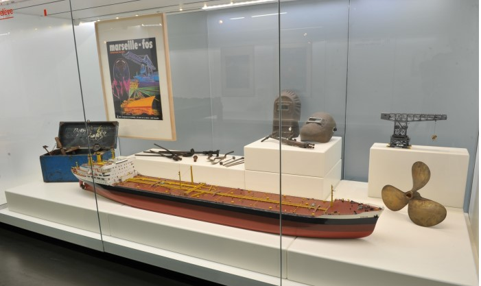